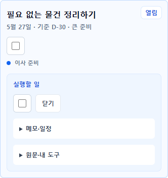
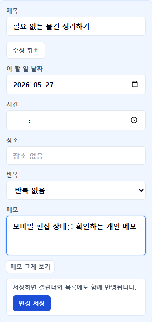
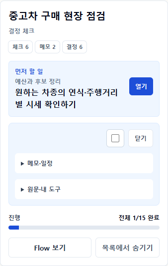
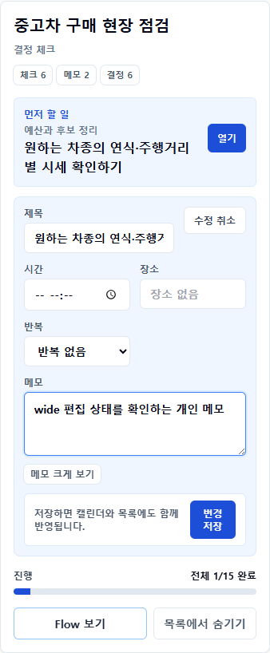
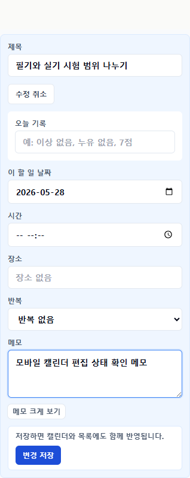

P22-04
할 일 상세는 실행과 편집을 동시에 요구하지 않습니다
My Flow와 Calendar의 같은 상세 컴포넌트를 실행 상태와 편집 상태로 나눴습니다. 기본 화면은 완료와 확인에, 편집 화면은 제목·날짜·메모 변경에 집중합니다.
기본 직접 행동최대 2
기본 visible edit/source/export0
편집 중 완료 체크0
390/1024 overflow0
결정: 바깥 행이 제목과 맥락을 담당하고, 열린 기본 상세는 완료 체크·닫기·실행 내용만 담당합니다. 수정과 원문/export는 각각 명시적인 disclosure 뒤에 둡니다.
My Flow · 모바일 390px


My Flow · wide 1024px


Calendar · 모바일 390px

Calendar · wide 1024px
자동 판정
| marker | 결과 | 의미 |
|---|---|---|
defaultPrimaryActionMax | 2 | 기본 상세는 완료와 닫기만 직접 노출 |
executeVisibleTitleInputCount | 0 | 실행 상태에 편집 입력 없음 |
executeVisibleSourceToolCount | 0 | source/export는 disclosure 뒤 |
editVisibleCompletionCount | 0 | 편집 중 실행 완료 행동 제거 |
editSaveDisabledBeforeChangeScenarioCount | 4/4 | 변경 전 실수 저장 방지 |
editSaveEnabledAfterChangeScenarioCount | 4/4 | 변경 후 저장 가능 |
horizontalOverflowCount | 0 | 모바일/wide 가로 넘침 없음 |
Claude Design 검토 질문
- 수정 입구를
메모·일정안에 둔 것이 실행 집중과 발견성 사이에서 적절한가? - 편집 중 완료 체크와 원문/export를 숨긴 상태 경계가 자연스러운가?
- 긴 모바일 편집의 필드 수를 더 줄여야 하는 Blocking 문제가 있는가?